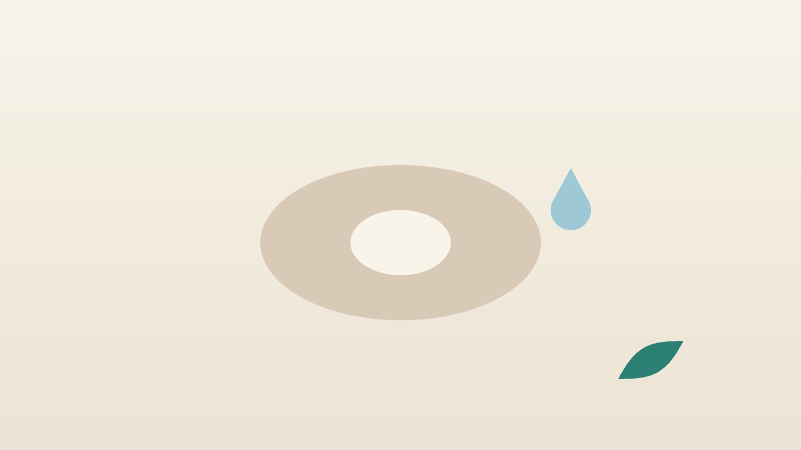

건강 칼럼 · 한방내과
배변 때 피가 비치고 항문이 불편하다면, 치질(치핵) 관리

나의 항문 증상, 이런 모습인가요?
- 배변 뒤 휴지나 변기에 선홍색 피가 묻는다
- 배변할 때 항문 밖으로 말랑한 덩어리가 나왔다 들어간다
- 항문이 묵직하고 가렵거나 축축하다
- 변비가 있어 화장실에서 오래 힘을 준다
- 휴대폰을 보며 변기에 10분 넘게 앉아 있다
- 술을 마시거나 오래 앉아 있은 다음 날 항문이 붓는다
이 체크리스트는 진단 도구가 아니라 상담이 필요한지 가늠해 보는 참고용입니다.
치핵은 왜 생기고, 어떻게 나누나요?
항문 안쪽에는 배변을 조절하는 쿠션 같은 혈관 조직이 원래 있습니다. 변비로 오래 힘을 주거나, 설사가 잦거나, 임신과 출산, 오래 앉아 있는 습관으로 압력이 반복되면 이 조직을 붙잡는 섬유가 늘어나 부풀고 아래로 처지는데, 이것이 치핵입니다. 치열(항문이 찢어진 것)이나 치루(항문 주변에 고름길이 생긴 것)와는 다른 질환입니다.
항문 안쪽에 생기는 내치핵은 빠져나오는 정도에 따라 네 단계로 나눕니다. 피만 나고 빠지지 않는 1도, 빠졌다가 저절로 들어가는 2도, 손으로 밀어 넣어야 들어가는 3도, 밀어도 들어가지 않는 4도입니다. 미국대장항문외과학회(ASCRS) 치핵 진료지침은 1~2도와 일부 3도는 식이섬유와 수분 섭취, 배변 습관 개선을 기본으로 하고, 필요하면 고무링 결찰 같은 시술을, 3~4도나 보존 치료로 낫지 않는 경우에는 수술을 고려하도록 안내합니다.
외과나 대장항문 검사가 먼저 필요한 신호
- 피가 검붉거나 변에 섞여 나오고, 점액이 함께 묻는다
- 배변 습관이 바뀌었다 (변이 가늘어짐, 설사와 변비 반복)
- 체중이 빠지거나 빈혈로 어지럽다
- 50세 이상인데 한 번도 대장내시경을 받지 않았다
- 항문 주위가 갑자기 딱딱하게 부어 앉기 힘들 만큼 아프다 (혈전성 치핵)
- 빠진 치핵이 들어가지 않고 색이 검게 변한다, 또는 열과 함께 항문 주위가 붓는다
혈전성 외치핵은 생긴 지 사나흘 이내라면 외과에서 혈전을 빼내는 처치로 통증이 빨리 줄 수 있어 미루지 않는 것이 좋습니다. 항문 주위 농양은 열과 욱신거리는 통증이 특징이며 절개와 배농이 필요합니다.
한의학은 치질을 어떻게 보나요?
한의학에서는 항문에 생기는 덩어리와 출혈을 통틀어 치(痔)라 불렀습니다. 『황제내경』 생기통천론에는 '배불리 먹어 근맥이 늘어지면 장벽(腸澼)이 되고 치가 된다(因而飽食 筋脈橫解 腸澼爲痔)'는 구절이 있어, 과식과 늘어진 조직이 치질과 관계있다는 생각이 오래전부터 있었음을 보여 줍니다. 배변 때 선홍색 피가 뿜어지듯 나오는 것은 따로 장풍(腸風)이라 하였습니다.
원인으로는 술과 매운 음식으로 생긴 습열(濕熱)이 아래로 몰리는 것, 오래 앉아 있고 변비로 힘을 주어 혈이 뭉친 어혈(瘀血), 기운이 약해 조직을 끌어올리지 못하는 중기하함(中氣下陷)을 꼽았습니다. 그래서 한방에서는 덩어리 자체보다 변비와 골반의 혈액 순환, 처진 기운을 다루는 쪽에 무게를 둡니다.
나는 어떤 유형일까?
1. 습열하주(濕熱下注) 붓고 화끈한 유형
- 이런 분에게 많아요
- 술, 매운 음식, 야식을 즐기는 분
- 나타나는 모습
- 항문이 붓고 화끈하며 선홍색 피가 난다
- 함께 오는 몸의 신호
- 변이 끈적하거나 냄새가 강함, 항문 가려움
- 진찰에서 보이는 모습
- 설태가 누렇고 끈적함
- 치료 방향
- 열과 습을 걷고 출혈을 다스리는 방향 (괴화산 계열)
- 오늘부터 해 볼 것
- 당분간 술과 매운 음식을 끊어 보세요.
2. 장조변비(腸燥便祕) 굳은 변에 찢기는 유형
- 이런 분에게 많아요
- 물을 잘 안 마시고 변비를 오래 달고 사는 분
- 나타나는 모습
- 딱딱한 변을 힘줘 보느라 출혈과 통증이 있다
- 함께 오는 몸의 신호
- 배에 가스, 입 마름, 피부 건조
- 진찰에서 보이는 모습
- 혀가 붉고 마르며 설태가 적음
- 치료 방향
- 장을 촉촉하게 해 변을 부드럽게 하는 방향 (마자인환 계열)
- 오늘부터 해 볼 것
- 하루 물 1.5리터와 채소 반찬 두 가지를 챙기세요.
3. 기체혈어(氣滯血瘀) 뭉쳐서 아픈 유형
- 이런 분에게 많아요
- 오래 앉아 일하는 분, 출산 뒤
- 나타나는 모습
- 항문이 묵직하고 덩어리가 단단하며 아프다
- 함께 오는 몸의 신호
- 골반이 뻐근함, 혀 아래 혈관이 굵음
- 진찰에서 보이는 모습
- 혀가 어둡고 반점이 있음
- 치료 방향
- 뭉친 혈을 풀고 골반 순환을 돕는 방향 (도인승기탕·계지복령환 계열)
- 오늘부터 해 볼 것
- 40~50분마다 일어나 골반을 움직이세요.
4. 중기하함(中氣下陷) 처져서 빠지는 유형
- 이런 분에게 많아요
- 고령, 출산 후, 기운이 약한 분
- 나타나는 모습
- 치핵이 쉽게 빠지고 피가 연하게 나며 오래간다
- 함께 오는 몸의 신호
- 피로, 숨참, 얼굴빛이 창백함
- 진찰에서 보이는 모습
- 혀가 담백하고 맥이 약함
- 치료 방향
- 아래로 처진 기운을 받쳐 올리는 방향 (보중익기탕 계열)
- 오늘부터 해 볼 것
- 변기에 앉는 시간을 5분 이내로 줄이세요.
한의원에서는 어떻게 진찰하나요?
- 검사 이력 확인: 대장내시경이나 항문 진찰을 받았는지, 언제였는지 먼저 확인하고 아직이면 검사를 안내합니다.
- 배변 문진: 변의 굳기, 배변 횟수, 힘주는 시간, 출혈 양상을 여쭙니다.
- 복진: 아랫배의 긴장과 가스, 변이 정체된 부위를 살핍니다.
- 설진·맥진: 혀와 맥으로 습열·변비·어혈·기허 가운데 어디에 가까운지 판단합니다.
한방 치료는 어떤 방식으로 돕나요?
1. 침 치료
- 공최(孔最): 팔 안쪽, 손목 주름에서 팔꿈치 쪽으로 약 7치. 예부터 치질 출혈에 쓰던 혈입니다.
- 이백(二白): 손목 안쪽 주름에서 4치 위, 힘줄 양옆 두 곳. 치질에 쓰는 경외기혈입니다.
- 승산(承山): 종아리 뒤 가운데, 발끝을 들면 근육이 갈라지는 곳. 항문 주변의 울혈을 덜어 줍니다.
- 천추(天樞)·족삼리(足三里): 배꼽 양옆 두 치, 무릎 아래 바깥쪽. 장의 움직임을 도와 변비를 다스립니다.
- 백회(百會): 정수리 가운데. 처진 기운을 끌어올릴 때 함께 씁니다.
2. 약침과 온열 요법
엉치뼈 주변과 아랫배의 관련 경혈에 약침을 적용해 골반 주변의 긴장과 울혈을 풀어 줍니다. 항문 주변이 차고 묵직한 분은 온열 요법을 함께 받으실 수 있습니다. 붓고 화끈한 시기에는 온열을 피합니다.
3. 한약
변비가 중심이면 장을 촉촉하게 하는 처방을, 출혈이 잦으면 열을 식히고 지혈을 돕는 처방을 탕약으로 씁니다. 항응고제나 아스피린을 드시면 출혈 양상이 달라질 수 있어 복용 중인 약을 알려 주시면 확인해 처방합니다. 임신 중이라면 진료 때 꼭 말씀해 주세요. 확인 후 안전한 약재로 처방합니다.
관리는 어떤 순서로 진행되나요?
- 원인 확인 출혈이 있다면 대장항문 검사로 다른 질환을 먼저 가립니다.
- 1~2주 좌욕과 배변 습관 교정, 침 치료로 붓기와 불편을 줄입니다.
- 2~6주 변비와 골반 순환을 탕약으로 다루며 출혈 횟수를 기록합니다.
- 재평가 빠지는 정도가 심하거나 출혈이 계속되면 외과 시술·수술 상담으로 연결합니다.
한방 치료는 치핵 덩어리를 없애는 수술을 대신하지 않으며, 변비와 순환을 다뤄 증상과 재발을 줄이는 보조 역할입니다.
항문을 편하게 하는 생활 관리
- 좌욕: 따뜻한 물에 엉덩이를 3~5분 담그는 좌욕을 하루 2~3번, 특히 배변 뒤에 해 보세요.
- 식이섬유와 물: 채소, 해조류, 잡곡, 과일로 섬유를 늘리고 물을 충분히 드세요.
- 변기 5분: 변의가 없으면 일어나고, 휴대폰은 화장실에 가져가지 않습니다.
- 발판: 변기에 앉을 때 발밑에 낮은 받침을 두면 힘을 덜 줘도 됩니다.
- 술과 오래 앉기: 음주와 장시간 앉아 있기는 항문 울혈을 키워 붓기를 부릅니다.
다른 진료가 함께 필요한 경우
- 혈변이 처음 생겼거나 양상이 바뀌었다면 대장항문외과에서 검사를 받으세요.
- 만 50세 이상은 국가암검진의 대장암 검진(분변잠혈검사)을 매년 받으세요.
- 혈전성 치핵, 들어가지 않는 치핵, 농양이 의심되면 외과로 바로 가세요.
- 임신 중 치핵이 심하면 외과 진료와 함께 안전한 관리법을 상의하세요.
자주 묻는 질문 Q&A
- Q1. 피가 나면 무조건 치질인가요?
- 아닙니다. 대장암, 대장 용종, 염증성 장질환도 혈변을 일으킬 수 있어 검사로 확인하는 것이 먼저입니다.
- Q2. 한약으로 치핵이 없어지나요?
- 한약이 늘어난 치핵 조직을 없애지는 못합니다. 변비와 출혈, 붓기를 줄이는 보조 치료로 봐 주세요.
- Q3. 좌욕은 몇 도 물로 하나요?
- 손을 넣어 따뜻하다고 느끼는 정도면 충분합니다. 너무 뜨거운 물은 오히려 붓기를 키울 수 있습니다.
- Q4. 수술을 꼭 해야 하나요?
- 1~2도는 대개 생활 관리와 약으로 지내며, 3~4도이거나 출혈이 계속되면 외과에서 시술이나 수술을 상담합니다.
- Q5. 치질이 대장암이 되나요?
- 치핵이 암으로 바뀌지는 않지만 두 질환이 함께 있을 수 있어 검사가 필요합니다.
- Q6. 임신 중에 치질이 생겼어요.
- 임신 중에는 복압과 변비로 흔히 생깁니다. 진료 때 임신 사실을 알려 주시면 확인 후 안전한 범위에서 관리합니다.
- Q7. 비데는 써도 되나요?
- 약한 수압으로 짧게 쓰면 괜찮지만, 강한 수압으로 오래 쓰면 항문 피부를 자극할 수 있습니다.
- Q8. 변비약을 계속 먹어도 되나요?
- 자극성 변비약을 오래 쓰면 장이 무뎌질 수 있습니다. 식이섬유와 배변 습관부터 바로잡고, 드시는 약을 알려 주세요.
참고 자료
- Davis BR, et al. The American Society of Colon and Rectal Surgeons Clinical Practice Guidelines for the Management of Hemorrhoids. Diseases of the Colon & Rectum, 2018
- 『황제내경 소문(素問)』 생기통천론(生氣通天論), 인이포식 근맥횡해 장벽위치(因而飽食 筋脈橫解 腸澼爲痔)
- 질병관리청 국가건강정보포털 — 원문
※ 이 글은 일반적인 건강 정보이며, 개인의 상태에 따라 치료 방법과 결과는 다를 수 있습니다. 정확한 진단과 치료는 진료를 통해 결정됩니다. 침·약침 시술 후 드물게 멍, 통증 등이 생길 수 있습니다.